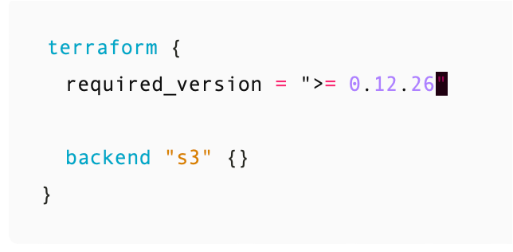

10 najlepszych praktyk
dla Infrastructure-as-a-Code

Wojciech Barczynski | Spacelift.io
6/10: Pinning wersji dla wszystkiego

- Providers – minimum version
- Modules i wersje OpenTofu/Terraforma - exact
8/10: Demokratyzacja
- Zacząć od wspólnych konwencji... potem narzędzia/moduły